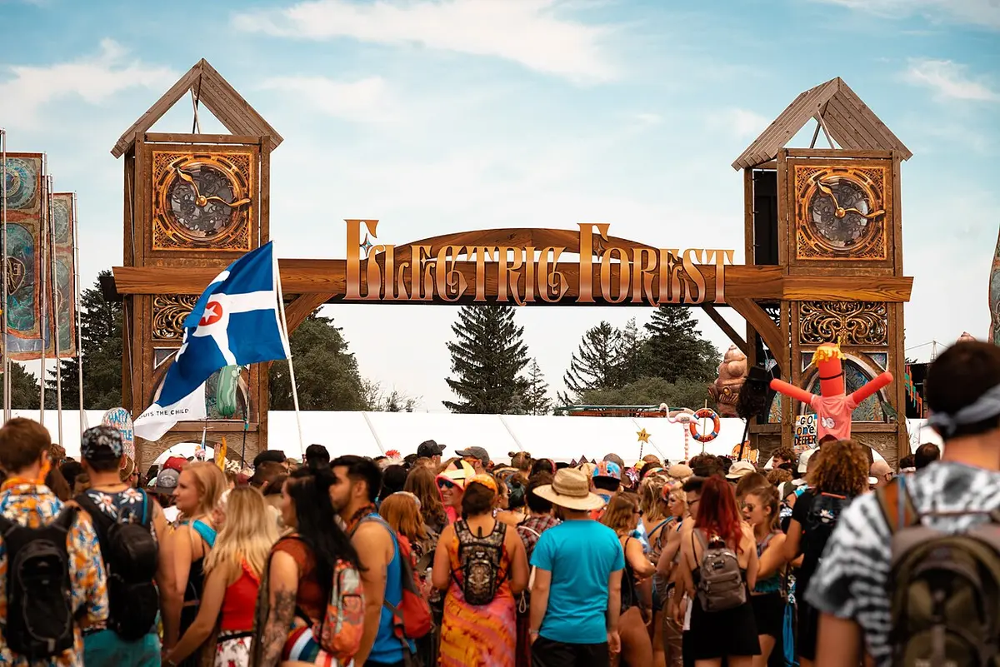
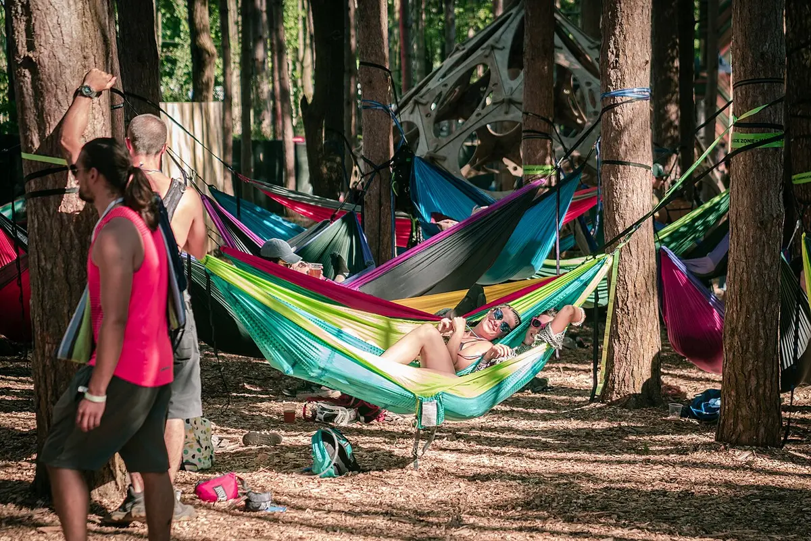

Festival guide, 2027
Electric Forest 2027: tickets, dates, camping and line-up
The Rothbury, Michigan festival: what is known about 2027 dates, how passes and camping work, how to get there and what to pack.
A festival with practical questions.
Electric Forest is a festival with a lot of practical questions attached. Where is it, how do you get in, where do you sleep, and what do you bring? Its own site answers most of them, but it is built around the current year, and in October the 2026 festival is over and the 2027 pages are empty.
This page keeps what is stable (the venue, the way passes and camping work, the rules) and says plainly what is not yet announced. Everything was read on 4 October 2026 from the official site and from local news. For a comparison with the other big American festivals, see the US EDM festivals guide.
What is Electric Forest festival?
The Electric Forest festival is a four day music and arts festival in the woods of western Michigan. Its official site says tens of thousands of people attend each summer at the Double JJ Ranch in Rothbury, and describes a festival built around stages, art, workshops and a campground with its own street, called Main Street.

The 2026 lineup announced in December 2025 included The String Cheese Incident and Shpongle alongside Kaskade and Chris Lake, and the US EDM festivals guide places the festival where jam bands and electronic music meet. The site lists its stages as the Ranch Arena, Sherwood Court, Tripolee, The Observatory, Honeycomb, Center Stage, a Silent Disco and the Grand Artique.
Electric Forest tickets
Electric Forest tickets were sold on AXS in 2026. The general admission pass includes a four day festival wristband and access to the general admission campgrounds. Camping itself is a separate add on, covered below.
The official pass page also lists higher tiers. Good Life is another pass type, hotel packages are sold on Easol and group camping is sold on FEVO. Service fees were included in the 2026 add on prices.
On 4 October 2026 the official ticket page showed only a thank you message, and the pass types page says Electric Forest 2026 is sold out. There is no live ticket page for 2027, so no pass can be bought and no on sale date exists. The festival's own site is the place to watch. The 2026 passes went on sale on 12 December 2025 at noon, after the lineup was announced, according to the Oceana County Press, which suggests the same order of events for 2027, though nothing official says so.
Add ons for 2026, as listed by the festival:
| Add on | 2026 listing |
|---|---|
| Uplift Lounge | $150 |
| Wednesday arrival, general admission | $50 per campsite, entering from 12:01 AM Eastern on Wednesday 24 June 2026 |
| Camp Kits | From $279 for one or two people |
| Lockers and shuttles | Sold as add ons |
Electric Forest ticket prices
No official Electric Forest ticket prices were on the site on 4 October 2026, because the ticket page was empty. For 2026, the Oceana County Press reported a general admission price of $600 when the lineup was announced. That is a newspaper figure, not a festival one, and it was not confirmed on a live ticket page, so treat it as a rough guide only. No 2027 price has been announced.
Electric Forest 2026
Electric Forest 2026 ran from Thursday 25 June to Sunday 28 June at the Double JJ Resort, according to the official site, whose banner read June 25 to 28, 2026. The general admission campgrounds closed at 4 PM Eastern on Monday. Arrival depended on the camping type:
| Camping type | Arrival in 2026 |
|---|---|
| General admission | Thursday, 12:01 AM |
| Group camping, general admission RV, preferred car camping, lake RV | Wednesday, 12:01 AM |
| Good Life tent camping | Wednesday, 8 AM |
| Back 40 | Wednesday, 10 AM |
| Hotel check in | 3 PM |
The lineup of about 100 artists was announced in December 2025. The White Lake Mirror's report named ILLENIUM, Excision, GRiZ, Chris Lake, Kaskade, Disco Lines, The String Cheese Incident, Sammy Virji, Levity, ISOxo, LSDREAM, Purple Disco Machine, Shpongle, Passion Pit, DJ Diesel and T-Pain. That is the announcement, not a record of who played.
The official site also listed an Electric Forest 5k run on Saturday 27 June, a Late Late Night Silent Disco in the campgrounds and an EF Radio stream.
Electric Forest 2027 dates
The Electric Forest 2027 dates were not announced on 4 October 2026. The official home page showed only a thank you message, and no 2027 date appeared on the ticket, pass or lineup pages.
Several listing sites already show a late June 2027 weekend. None of them cites the festival, so those dates are unconfirmed and are not repeated here. The only edition this page can date is 2026. This section is updated when the dates are published.
| Item for 2027 | Status on 4 October 2026 |
|---|---|
| Dates | Not announced |
| Tickets | Not on sale, no ticket page |
| Lineup | Not announced |
| Prices | Not announced |
Electric Forest lineup
No Electric Forest lineup exists for 2027 yet. The 2026 lineup came out in December 2025, six months before the festival, so a 2027 announcement would be expected in the winter, though nothing official says so.
The official site publishes a poster for each year in its look back section, with art credits for 2011 to 2019 and 2022 to 2025. There is none for 2010, 2020 or 2021, which matches the history below.
To hear the festival before you commit, three sets uploaded by the artists themselves are embedded below: Levity in 2024, Whethan in 2025 and Of The Trees in 2025, each recorded at Electric Forest according to its upload title. For something you do not know yet, the Selector plays a recorded DJ set at random.
Where is Electric Forest? Rothbury, Michigan
Electric Forest is held at the Double JJ Resort in Rothbury, a village in western Michigan. The resort says it opened as the Jack and Jill Ranch in 1937 and became the Double JJ Ranch in the mid 1970s. It lists a waterpark, golf, horseback trail rides and cabins, and calls itself the biggest western style dude ranch east of the Mississippi.
Driving, the official site sends general admission traffic to the South Toll via Highway 31, Exit 136 (Winston Road). RVs, group camping and enhanced camping use the North Toll via Exit 140 (Stony Lake Road). In 2026 Will Call moved to the Winston Speedway Box Office. General admission satellite parking was walk in, wristbands were not sold at the gate unless still listed online, and the box office was cashless.

Sherwood Forest
Sherwood Forest is a part of the festival grounds, described by the official site as a world within the festival, curated by a collective of creative minds. It holds The Observatory, Honeycomb and the Grand Artique. It is a place inside the festival, not the English woodland of the same name.
Electric Forest camping
Camping is built into the pass. The general admission pass includes campground access, and a car or RV camping pass is bought separately, one per vehicle or campsite, not per person. The general campgrounds have Main Street, The Brainery workshops, restrooms and showers, and the Late Late Night Silent Disco.
Arrival times for each camping type in 2026 are in the table in the Electric Forest 2026 section above.
Electric Forest shuttle
An Electric Forest shuttle ran in two ways in 2026. The festival sold round trip shuttles from Grand Rapids, Detroit, Ann Arbor, Chicago, Columbus and New York City, and said it had added two new routes that year. Riders got complimentary early arrival.
Inside the grounds, camping shuttles included Wal-Mart and WESCO shuttles, a Blueberry shuttle and a waterpark shuttle. Hotel shuttles ran at 12 AM, 2 AM, 4 AM and 5 AM.
Electric Forest hotel
Electric Forest hotel packages were sold on Easol in 2026, and hotel check in was at 3 PM. The overnight hotel shuttles are listed above. No 2027 hotel package exists until the 2027 passes go on sale.
Electric Forest packing list
The festival's prep guide, written by the Sherwood Shepherds, who moderate the festival's subreddit and Discord, expects temperatures from the mid 50s Fahrenheit at night to above 90 in full sun, and says rain comes at least once every year. The items it recommends:
- A rain jacket or poncho, extra warm clothes and wool socks.
- A canopy and stakes for the campsite.
- Earplugs, a flashlight and battery packs.
- A face covering and a saline rinse, because of dust.
- A totem no taller than 7 feet, made of light material with no wood or metal, so your crew can find you.
Plan on two outfits a day. Check the prohibited list before packing, because fireworks, open flame, generators other than an RV's built in or solar one, glass, drones and laser pointers are not allowed.
Electric Forest FAQ.
What is the Electric Forest age limit?
Electric Forest is open to all ages. Children aged 2 and under are free, anyone aged 3 and up needs a wristband and there are no child discounts. You must be 21 or older to drink alcohol.
What are the Electric Forest rules?
Alcohol is allowed in the campgrounds only, up to one case of beer and one box of wine per person, unopened, with no kegs, glass or hard liquor, and none carried from the campsites into the venue. In the venue you may bring one factory sealed water bottle of up to a gallon, and hydration packs and reusable bottles must be empty. Outside food and drink, chairs, tents, strollers, wagons, framed or large backpacks, bicycles and scooters are not allowed inside the venue.
What is the Electric Forest history?
It began as the Rothbury Music Festival in 2008 and 2009, and there was no festival in 2010. It was renamed Electric Forest in 2011 and first sold out in 2014, according to TV Overmind. The festival was not held in 2020 and 2021 because of COVID and returned in 2022. The Village of Rothbury extended the festival's permit through summer 2035.
Is there an Electric Forest weekend 2?
Not in 2026, when the festival was one weekend from 25 to 28 June. An Electric Forest second weekend was held once: TV Overmind reported two back to back weekends in 2017 and a later return to one. No weekend 2 has been announced for 2027.
When is Electric Forest 2027?
The dates were not announced on 4 October 2026. See the dates section above.
How much are Electric Forest tickets?
No official price existed on 4 October 2026. A local newspaper reported about $600 for general admission in 2026.
Sources.
- Dates, passes, add-ons, arrival times and shuttles, read on 4 October 2026: electricforestfestival.com, pass types and tickets.
- Rules, driving directions, prohibited items and the prep guide, read on 4 October 2026: festival info and the Forest prep guide.
- Stages, Sherwood Forest and The Brainery, and past posters, read on 4 October 2026: experiences and a look back.
- The venue, read on 4 October 2026: the Double JJ Resort page.
- The 2026 lineup announcement, December 2025: White Lake Mirror and Oceana County Press, the source of the reported general admission price.
- History: TV Overmind, 2019 and the permit extension, The Ticket 95.3, 2024.
Continue reading
Read next.
 Rave spots~6 min read
Rave spots~6 min readBest Clubs in Bristol: Motion, Lakota and Thekla
Motion lost its lease in 2025 and moved, Lakota has run drum and bass since the 1990s, and a 1959 cargo ship still hosts club nights: the best clubs in Bristol.
Read article → Festivals~9 min read
Festivals~9 min readTomorrowland Festival: Where It Is, How Big, and the Music
A park in Boom, Belgium, that most of the world knows through a livestream: where Tomorrowland happens, how big it is, who owns it, and what plays off the Mainstage.
Read article → Festivals~11 min read
Festivals~11 min readEDC Las Vegas: What It Is, How Big, and the Music
Electric Daisy Carnival at the Las Vegas Motor Speedway: where EDC happens, how half a million people a year grew out of a field in Chino, and what plays past kineticFIELD.
Read article → Festivals~10 min read
Festivals~10 min readCreamfields Festival 2027: Location, Capacity, Age Limit
Four days on the Daresbury estate every August bank holiday: where Creamfields happens, how a Liverpool house night grew into it, who owns it, and what plays beyond the Arc Stage.
Read article →